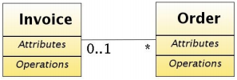
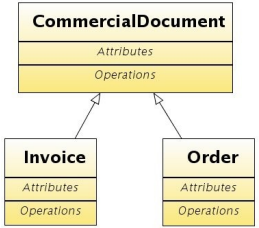
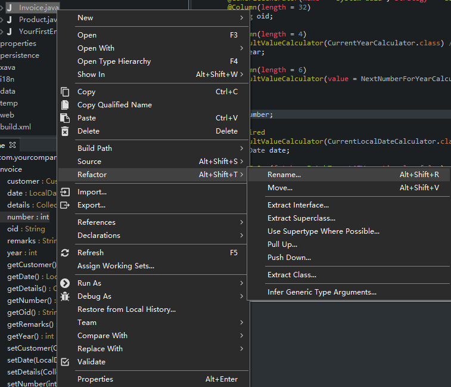
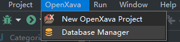
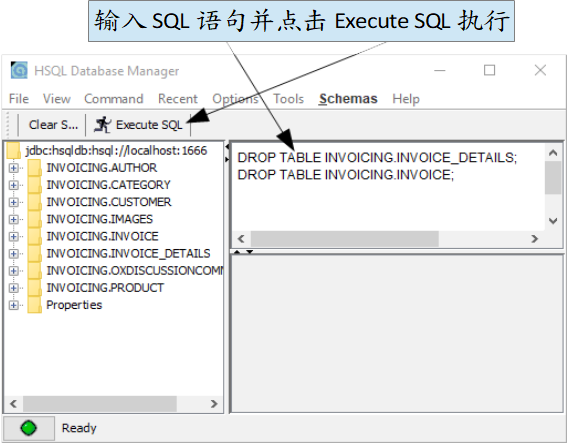

@Entity
public class Invoice {
@OneToMany(mappedBy="invoice")
Collection<Order> orders;
...
}
@Entity
public class Order {
@ManyToOne // 无 lazy fetching (1)
Invoice invoice;
...
}
也就是说，一个发票能有多个订单，但一个订单仅能有一个发票。我们没有在 Invoice(1) 引用上没使用延迟获取（Lazy Fetching），这是一个 Hibernate 的错误，当引用拥有双向关系（在 @OneToMany 中的 mappedBy 属性中声明）。
订单长什么样？好吧，它有一个客户，有几行产品和数量的详细信息，一个年份和一个数字，差不多如下图：
顺便说一下，这张 UML 图与 Invoice 的图一样。也就是说，要创建您的 Order 实体，您只需复制并粘贴 Invoice 类，工作就完成了。但是，等等！ “复制粘贴”是大罪。因此，我们必须找到一种方法在 Order 重用 Invoice 代码。
CommercialDocument 作为抽象实体
在 Order 上重用 Invoice 代码的一种实用方法是使用继承，此外，这也是了解在 JPA 和 OpenXava 使用继承是多么容易的一个绝佳机会。
在大多数面向对象的文化中，您会看到“是个（is a）”规则。意思就是我们不能做 Invoice extends Order，因为 Invoice 并不是 Order。这种情况的解决方案是为 Order 和 Invoice 创建一个基类。我们将把这个类称为 CommercialDocument。
这是 CommercialDocument 的 UML 图和使用 Java 的表达方法：

public class CommercialDocument { ... }
public class Order extends CommercialDocument { ... }
public class Invoice extends CommercialDocument { ... }
让我们开始重构您目前的代码。首先，使用 Refactor > Rename 将 Invoice 重命名为 CommercialDocument。

现在，编辑 CommercialDocument 代码以将其声明为抽象类，如下：
abstract public class CommercialDocument // 添加了 abstract 修饰符
我们会想要创建 Invoice 和 Order 的实例，但不想直接将 CommercialDocument 实例化，所以将其声明为抽象的（abstract）。
为使用继承而重构发票
现在，您必须从创建新的 Invoice 实体，使用 extends CommercialDocument。以下是 Invoice 新代码：
package com.yourcompany.invoicing.model;
import javax.persistence.*;
import lombok.*;
@Entity @Getter @Setter
public class Invoice extends CommercialDocument {
}
Invoice 现在有非常简洁的代码，类的主体现在是空的，至少目前来说。
这新代码需要的数据库架构稍微不同，现在发票和订单将使用鉴别器列存储在同一个表（CommercialDocument 表）。因此，您需要删除旧表，请执行以下 SQL 语句：
DROP TABLE INVOICING.INVOICE_DETAILS;
DROP TABLE INVOICING.INVOICE;
要执行这些 SQL 语句，首先确保您的应用程序正在运行，然后使用 OpenXava Studio 的菜单选项 OpenXava > Database Manager：

然后：

现在您可以执行 Invoice 模块并在浏览器中查看。此外，执行 InvoiceTest（它必须是绿色的）。
如果您使用自己的 Eclipse 或 IntelliJ，则可以使用 OpenXava/build.xml 的 runDBManager Ant 运行数据库管理器。
使用继承创建 Order
多亏了 CommercialDocument，创建 Order 实体变得非常容易：
package com.yourcompany.invoicing.model;
import javax.persistence.*;
import lombok.*;
@Entity @Getter @Setter
public class Order extends CommercialDocument {
}
编写完以上的 Order 类后，虽然它现在是空的，但你可以在浏览器中使用 Order 模块了。是的，从现在开始，创建一个类似 Invoice 结构的新实体（任何商业文件实体）都非常快和容易。很好地使用继承是获得简洁代码的方式。
Order 模块已完美运行，但它有一个小问题。新的订单号是根据最后一个发票号计算的，而不是最后一个订单号。这是因为计算器是从 Invoice 实体中读取的。一个解决方案是将 number 属性的定义从 CommercialDocument 移动到 Invoice 和 Order。不过，我们不打算这样做，因为在下一章我们将改进计算下一个数字的方法，现在我们只需对当前代码进行一些调整，使其不会出现故障。请编辑 NextNumberForYearCalculator 类并在查询中将 Invoice 更改为 CommercialDocument，保留 calculate() 方法，如下：
public Object calculate() throws Exception {
Query query = XPersistence.getManager().createQuery(
"select max(i.number) from " +
"CommercialDocument i " + // 使用 CommercialDocument 而不是 Invoice
"where i.year = :year");
query.setParameter("year", year);
Integer lastNumber = (Integer) query.getSingleResult();
return lastNumber == null?1:lastNumber + 1;
}
现在会搜索该年任何商业文件（CommercialDocument）的最大编号以计算新的编号，因此编号在所有商业文件中共享。这会在下一章中进行改进，以便为发票和订单分开单独编号，以便更好地支持多用户环境。
命名规范和继承
您应该注意到，无需更改 Invoice 中的任何属性名称即可进行重构。这是因为我们遵循下一个实用原则：不要在成员名称中使用类名，例如，在 Account 类中，不要在任何方法或属性中使用“Account”一词：
public class Account { // 在此例我們將必免在成員名上使用 account
private int accountNumber; // 错，里包括 account
private int number; // 对，并无 account
public void cancelAccount() { } // 错，里包括 account
public void cancel() { } // 对，并无 account
...
}
使用此命名法，您可以在继承层次结构中重构 Account，而无需重命名其成员，并且您可以使用 Account 编写多态代码。
将订单（Order）与发票（Invoice）关联
至此，Order 和 Invoice 完全一样。我们将对它们进行第一个扩展，就是将 Order 与 Invoice 相关联。如图所示：
您只需要在 Order 添加一个 Invoice 的引用：
package com.yourcompany.invoicing.model;
import javax.persistence.*;
import lombok.*;
@Entity @Getter @Setter
public class Order extends CommercialDocument {
@ManyToOne
Invoice invoice; // 添加 Invoice 的引用
}
相反的，在 Invoice 中，添加一个 Order 实体的集合：
package com.yourcompany.invoicing.model;
import java.util.*;
import javax.persistence.*;
import lombok.*;
@Entity @Getter @Setter
public class Invoice extends CommercialDocument {
@OneToMany(mappedBy="invoice")
Collection<Order> orders; // 添加 Order 实体的集合
}
编写完这简单的代码后，您就可以使用新建的联系了。重新启动您的应用程序并浏览 Invoice 和 Order 模块。要注意的是，在 Order 用户界面的末尾，您有一个对 Invoice 的引用。用户可以使用此引用将发票与当前订单相关联。另一方面，如果您探索 Invoice 模块，您将在最后看到一系列订单。用户可以使用它将订单添加到当前发票。
您可尝试将数个订单添加到同一个发票，也将一个发票与某个订单相关联。虽然它可以运行，但用户界面还是有点难看。别担心，我们会在下一课中改进它。
总结
本课向您展示了一些关于如何在 JPA 实体上使用 Java 的继承来简化代码。我们使用 JPA 默认的配置进行继承，尽管您可以使用一些 JPA 注解来优化 JPA 的继承行为（如 @Inheritance、@DiscriminatorColumn、@DiscriminatorValue 等）。要了解有关 JPA 中的继承的更多信息，请阅读
附录 B。
对这节课有什么问题吗？ 前往轮譠一切都顺利吗？ 前往第八章